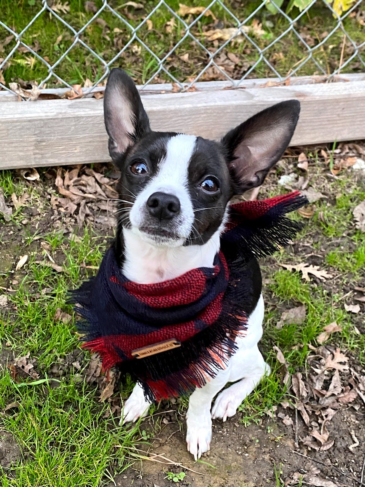
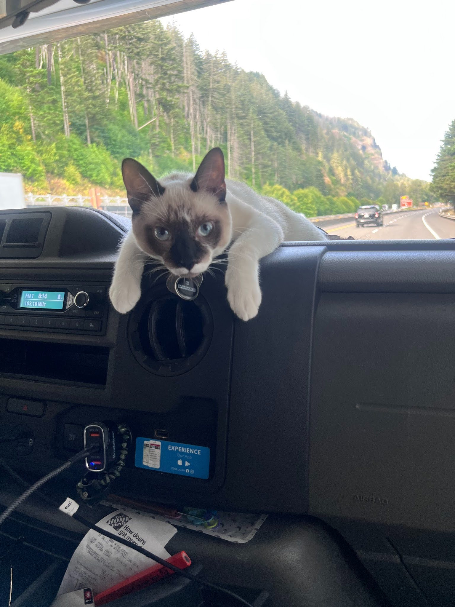
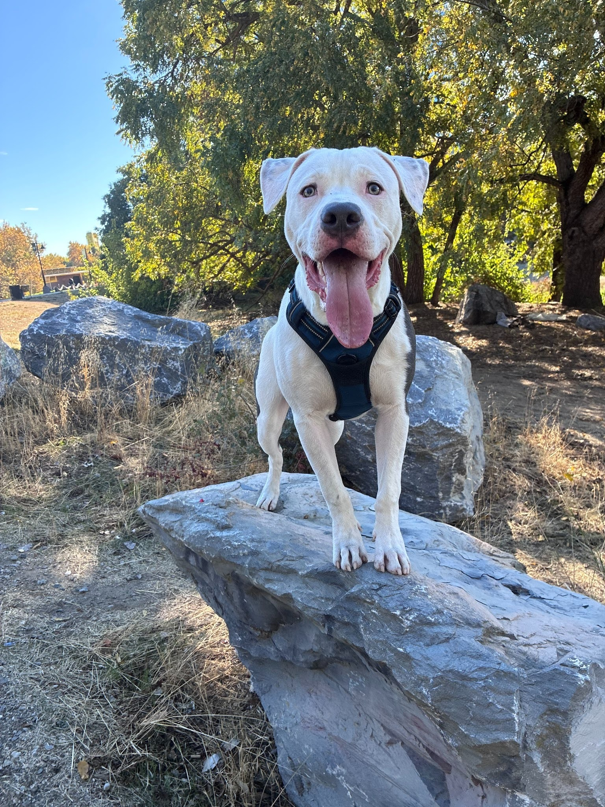

My First Website
Welcome to my very first website! Here, you’ll find my projects, homework assignments, information about me, what I’ve learned in class, and fun facts about my pets and their personalities. Through this website, you’ll explore the basic structure and fundamentals of web development and see how I’ve applied what I’ve learned to create this site. Eventually, I’ll use these skills to build a more advanced website for my final project, showcasing everything I’ve learned throughout my journey. But first, let’s introduce my pets! :)
This is my Chihuahua his name is Kilo

Fun facts about Kilo
- Kilo was born June 02 2018
- He loves to chew bones and bark at people
- He is very small but full of energy
- Kilo was rejected by his mom at 2 weeks old and had to be bottle-fed
This is Kilo, he is a small black and white Chihuaha who I have owned For 8 years. He is very energetic, protective and loves to model the thousands of bandanas i put on him. Kilo was given to me when one of my bestfriends dog had puppies and the mother regected him from the litter. Overall Kilo has been through thick and thin with my family and even though he can be a bit annoying with his barking I wouldnt trade him for the world.

This is my Cat his name is Dean

Fun facts about Dean
- Dean was born February 15 2025
- He loves to play with toys and hide my paint brushes and pencils
- He is very Cuddly and loves to snuggle
- Dean loves to supervise all the other humans and pets in the household
This is Dean, Dean is named after the character Dean from the TV show "Supernatural". He is a very affectionate cat towards girls and loves to play with small stuffed toys. We like to call Dean the "supervisor" because he walks around the house like he owns it. One of Deans nicknames is Punk uh Punk because he wont hesitate to slap someone with his paws. He can be a bit rebellious and loves to get into mischief.

This is my Pit mix Philly

Fun facts about Philly
- Philly was born March 17 2026
- He loves to play fetch and go on long walks
- He is very loyal and protective
- Philly's favorite thing to chew on is sticks and stuffed toys
This is Philly, he is a Pit mix who is half Dogo arengtino. My family and I have owned him for 5 months. He is very energetic, loves to play Fetch, and is always by my side. Philly has a strong bond with my Dad who is his favorite person and is known for his protective nature. Even though Philly looks intimidating he is very goofy and cuddly. So far Philly is learning new tricks and is becoming a well-behaved dog in the family.
